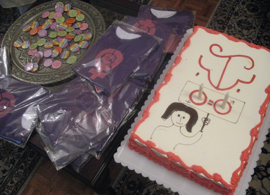

پذيرش > تریبون > گزارش كمپين > دومین سالگرد کمپین یک میلیون امضا زیر سایه ماموران امنیت!
 با حضور فعالان کمپین تهران و شهرستان ها : با حضور فعالان کمپین تهران و شهرستان ها :

 دومین سالگرد کمپین یک میلیون امضا زیر سایه ماموران امنیت! دومین سالگرد کمپین یک میلیون امضا زیر سایه ماموران امنیت!
7 شهریور 1387 - تغییر برای برابری - نسخه قابل چاپ
تغییر برای برابری- بزرگداشت دومین سالگرد کمپین یک میلیون امضا، پنج شنبه هفتم شهریور ماه با وجود تهدیدات امنیتی برگزار شد. شیرین عبادی نیز روز 5 شهریور ماه به همراه برخی از اعضای کمپین با محبوبه و خانواده اش دیدار کرد .
دیدار فعالان کمپین با محبوبه همزمان شد با سالگرد کمپین و دعوت مادر محبوبه از یاران کمپینی دخترش، اما با ورود نیروهای امنیتی و انتظامی به منزل میزبان، اعضای کمپین تهران و شهرستان ها مجبور به ترک خانه شده و سالگرد کمپین را در مکانی دیگر گرامی داشتند.

ساعت پنج عصر، یک ساعت قبل از شروع مراسم در حالی که تعداد 20 نفر از فعالان کمپین در منزل محبوبه کرمی مشغول آماده کردن مقدمات مراسم بودند، چند مامور لباس شخصی و انتظامی با ورود به منزل محبوبه کرمی، مادر محبوبه را تهدید به بازداشت دخترش کرده و خواستار خروج مهمانان از منزلش شدند. این ماموران که حکم ورود به منزل را داشتند، بعد از دقایقی مجددا در منزل را بستند و ضمن فیلمبرداری و عکاسی از مهمانان مانع از خروج مهمانانی شدند که آماده ترک منزل محبوبه بودند. با وجود این مراسم دومین سالگرد کمپین یک میلیون امضا را در منزل یکی از مادران صلح برگزارشد. هرچند در ان زمان محبوبه و مادرش به دلیل حضور ماموران بیرون از منزلشان نتوانستند در کنار یاران خود باشند.
در این مراسم خدیجه مقدم، عضو کمیته مادران کمپین با تبریک دومین سالگرد کمپین اظهار امیدواری کرد که کمپین پر توان تر از قبل به فعالیت های خود ادامه دهد.
وی با اظهار تاسف از اینکه برخی از مهمانان و همچنین تعداد زیادی از داوطلبان کمپین که قرار بود در این مراسم شرکت داشته باشند، به دلیل تهدیدات امنیتی و تغییر اجباری مکان مراسم، موفق به حضور در این برنامه نشدند، گفت:"قرار بود کمیته های مختلف گزارشی از فعالیت هایشان ارائه کنند که به دلیل شرایط موجود این گزارش ها در سایت تغییر برای برابری منتشر می شود."
زهره اسد پور، از فعالان کمپین رشت نیز در این مراسم حضور داشت. اسد پور با نوید اینکه کمپین رشت پرتوان و با انرژی به فعالیت های خود ادامه می دهد، گفت:" به مناسبت سالگرد کمپین ما ضمن تهیه وتوزیع دفترچه هایی در سطح شهر، تعداد زیادی پین و کارت تبریک نیز تولید کردیم."

وی همچنین فعالیت های اعضای کمپین رشت در اعتراض به لایحه حمایت از خانواده را تشریح کرد.
اسد پور تاکید کرد:"کمپین در رشت همچنان پر قدرت پیش می رود و آنقدر قوی شده است که حتا دستگیری چند نفر در این شهر نمی تواند این فعالیت مسالمت آمیز و گسترده را متوقف کند."
پروین ذبیحی از فعالان کمپین در مریوان از دیگر شرکت کنندگان در این مراسم بود. ذبیحی با تشریح فعالیت های کمپین در مریوان، خواستار توجه ویژه فعالان زن به گسترش خشونت های ناموسی در کردستان شد.
وی با اشاره به برخی قتل های ناموسی که در چند ماه اخیر اتفاق افتاده است وبا انتقاد ازمدافعان حقوق برابر در کم توجهی به این موضوع از آنان دعوت کرد تمرکز بیشتری بر این نوع خشونت ها داشته باشند. وی تاکید داشت که اطلاع رسانی در این زمینه خوب است اما کافی نیست .به گفته وی فعالان زن کردستان با تشکیل کمیته ای تحت عنوان مبارزه با قتل های ناموسی ، برای توقف این قتل ها تلاش می کنند.
کاوه کرمانشاهی از اعضای کمپین و فعال حقوق بشر در کردستان با اشاره به وضعیت زینب بایزیدی به روند احضار، بازداشت و صدور 4 سال زندان برای وی و همچنین تعجیل فراوان در روند بازداشت وی حقوق بشر کردستان اعتراض کرد.
در ادامه امیر یعقوبعلی با اعلام اینکه حکم یک سال زندان تعزیری وی به دوسال حبس تعلیقی تبدیل شده است، از تمامی اعضای کمپین که از زمان بازداشت وی تا کنون در تمامی مراحل همراه وی بوده اند، سپاسگزاری کرد.نتیجه دادگاه تجدید نظر وی به دفتر شیرین عبادی وکیل وی ابلاغ شده است.
علی عبدی، از اعضای کمیته مردان کمپین نیز با اشاره به اینکه در دو سال گذشته حدود 160 نفر درجلسات آموزشی کمیته مردان شرکت کرده اند، گفت:"حضور مردان در جنبش زنان از سویی ثابت می کند که تبعیض علیه زنان می تواند تبعیض علیه همه انسان ها باشد و از سوی دیگر یک گفتمان برابری طلبانه را از سوی مردان در جنبش زنان تولید می کند. "
وی اضافه کرد:" یکی از سوالات ما در کارگاه های مردان این است که تاثیر این قوانین در زندگی مردان چیست و چه ضرری برای آنان دارد و حالا بعد از دو سال مصادیق بسیاری از تاثیر قوانین نابرابر در زندگی مردان توسط خود داوطلبان مرد تهیه شده است. "

احترام شادفر از کمیته مادران کمپین نیز بر لزوم تلاش هرچه بیشتر برای جمع آوری امضا تاکید کرد. وی گفت:"اگر هر یک از اعضای کمپین بنا را بر این بگذارند که هر روز تنها یک امضا جمع کنند طی یک سال آینده تعداد بسیار زیادی امضا جمع خواهد شد و تعداد زیادی نیز به کمپین خواهند پیوست."
کمپین مثل یک رود خروشان از شهرهای بزرگ شروع شده و به روستاها نیز کشیده شده است.ژیلا بنی یعقوب، با بیان این مطلب در جمع اعضای کمپین گفت:" به اعتقاد من هدف کمپین فقط جمع آوری امضا نبود و هدف مهمترآن آگاهی بخشی است که این هدف در کمپین محقق شده است."
وی در ادامه به موضوع ائتلاف بر ضد لایحه حمایت از خانواده پرداخت:" خوشبختانه نقطه مثبت این ائتلاف این است که تا کنون بیش از سه هزار نفر با امضای بیانیه بر ضد لایحه موسوم به حمایت از خانواده نسبت به آن واکنش نشان داده اند و گرایش های مختلف فکری و سیاسی نیز به این ائتلاف پیوسته اند."
با وجود اینکه به دلیل تغییر مکان، برخی از مهمانان موفق به شرکت در این مراسم نشدند، دومین سالگرد کمپین یک میلیون امضا در جمع اعضای کمپین تهران و شهرهای کرمانشاه، سنندج و رشت گرامی داشته شد. پخش سرود جدید کمپین، ارائه تی شرت های تولید شده از سوی کمیته هنری، پین ها و کارت تبریک های کمپین رشت وگزارش های کمیته های مختلف کمپین تهران بخشی از برنامه های این مراسم بود.
ارسال به
بالاترین
،
توییتر
،
فریندفید
،
فیسبوک
در همين بخش :
 دهمین دورۀ مراسم تندیس صدیقه دولت آبادی ۱۳۹۲ دهمین دورۀ مراسم تندیس صدیقه دولت آبادی ۱۳۹۲
کارت پستالهایی به بهانهی هشت مارس و به یاد همهی مبارزین راه برابری
بیانیه بیش از 350 تن از مدافعان حقوق زنان به مناسبت روز جهانی زن؛ زنان هر روز فرودستتر میشوند
لباسی که برای تن ما دوخته اند! /اعظم بهرامی
چالشها و چشمانداز فعالیت مدنی زنان
ديگر بخش ها :
طرح یک میلیون امضا
|
مقالات
|
سایت نوشته ها
|
اخبار
|
گزارش كمپين
|
گفت و گو
|
علیه سکوت
|
كوچه به كوچه
|
نامه های شما
|
گزارش ویژه
|
گفتگو با اعضا
|
ویژه سالگرد کمپین
|
تصویر برابری
|
دل آرام علی
|
تریبون
|
مقالات
|
تاریخ شفاهی
|
خارج از چارچوب
|
کتابخانه
|
درباره کمپین
|
کمپین در شهرها
|
کمپین در بند
|
صدای تغییر
|
ویژه 22 خرداد
|
لایحه حمایت از خانواده
|
گالری
|
عشا مومنی
|
امیر یعقوبعلی
|
خدیجه مقدم
|
راحله عسگری زاده و نسیم خسروی
|
پروین اردلان،جلوه جواهری، مریم حسین خواه، ناهید کشاورز
|
زینب پیغمبرزاده
|
سعیده امین، سارا ایمانیان، محبوبه حسین زاده، ناهید کشاورز و همایون نامی
|
احترام شادفر
|
نسیم سرابندی زاده،فاطمه دهدشتی
|
وبلاگ مهمان
|
پرونده خرم آباد
|
دستگیری ها
|
مریم مالک
|
پرستو اللهیاری
|
مهرنوش اعتمادی
|
سمیه رشیدی
|
Other Languages
|
همراهان
|
«فراخوان کمپین ده روز با بهاره هدایت»
| English
|